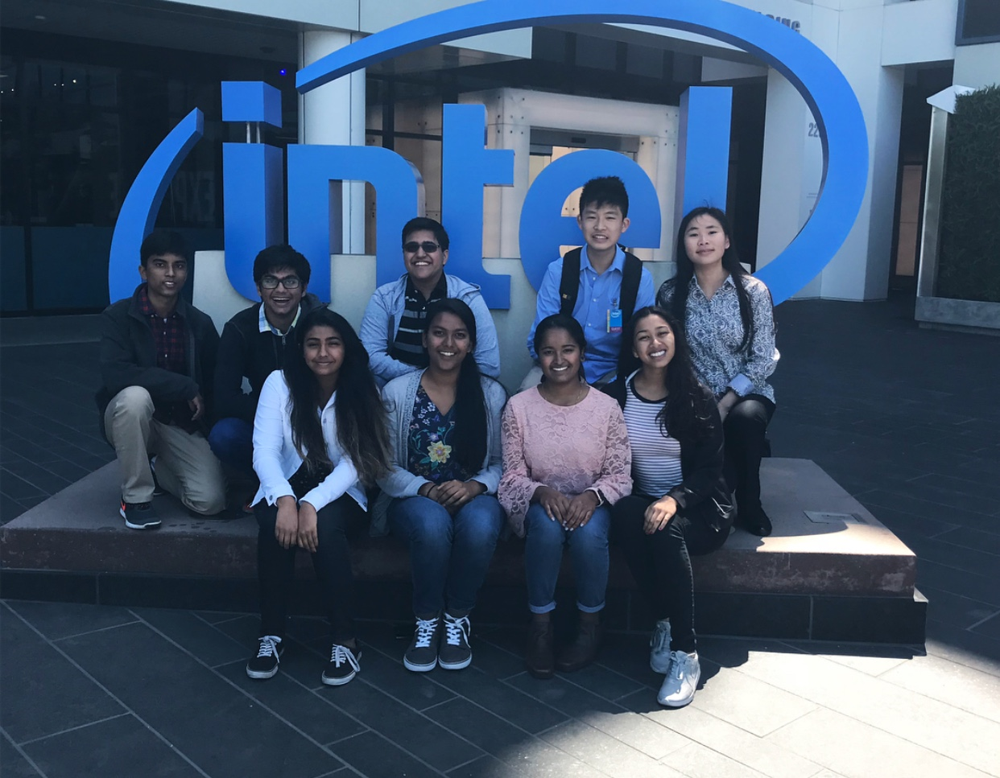
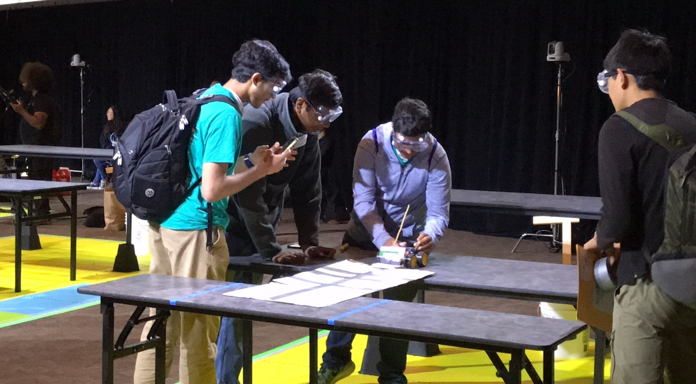

Educational Enhancement
Alongside educational high school activities, I have participated in multiple professional development projects outside of my school. Each of these allowed me to develop crucial skills all quants must attain.
- Simplion Technologies and Lirik Co. Intern
- I am very grateful to have the opportunity to work in the professional field of quantitative analysis as a highschooler through internships in the Silicon Valley. As a summer intern for both Simplion and Lirik, which are sister companies, I was able to experience both the management and software development sides of a business, and gained influential experience that I can take with me. I worked as a Financial Analyst for Simplion Technologies, managing and organizing the company’s and the worker’s monthly bank statements. I also was an auditor to 100 of their international clients, learning about the process of financial analysis. I was able to explore the realm of software development by learning about SalesForce Development through Lirik, and participating in their client customer service calls. With my software development experience, I now understand the norm for business software development, and will use my competence to work well in any future quantitative business.
- Job Shadowing Program at Intel
- I got the opportunity to job shadow under Intel software developer Mr. Dinyar Dastoor. He showed me the operation of Intel’s chip designing and programming process, and helped me understand important tools all professional quantitative developers use. During this experience, I was able to meet Mrs. Alice Chan, the Intel Vice President of Compilers and Libraries, who gave me more professional development advice. I also got to meet Mrs.Daisy Rincon, a Intel marketing and business development manager, who showed me how a quantitative analyst works in a multinational technology corporation.
- Cupertino 3D Prints Business CEO
- I decided to partake in my own entrepreneurial adventures by creating a 3d design and modeling company for my city. Through my business, I gained problem solving skills by working through business setbacks. I also attained management skills as I had to keep my business organized for it to remain operational and profitable.
- You can read an expert on my interest in 3d animation and my business here: [link]
- The Tech Challenge Competition
- I participated in the Rock the Ravine tech challenge at the Technological Museum of Innovation. In this competition, my group created a fully functional robot using an arduino chassis. By creating the robot from scratch, I gained insight on strategic planning and development, as it took numerous prototypes before finalizing a functional robot model. Soft coding our robot helped me practice software development skills that all quants must master.
- You can view our competitions engineer journal report here: [link]
- MIT Zero Robotics Competition
- This was an international coding competition that made me practice software development for specific scenarios regarding objects in space. To get an overview of this competition, please see my group’s [Summarization of The Game Manual]. My competence in professional algorithmic coding assisted our team in placing in the top 120 teams internationally.
- Volunteer Projects
- My volunteer efforts have allowed me to obtain the National Presidential Volunteer Service Award. Through volunteering at multiple day long marathons, wildlife reserves, and elderly homes, I have gained resilience that I can use to lead me through any project I take on as a quant. Also by helping facilitate successful large scale robotics regional tournament and speech and debate competitions, I have gained great organization skills.

